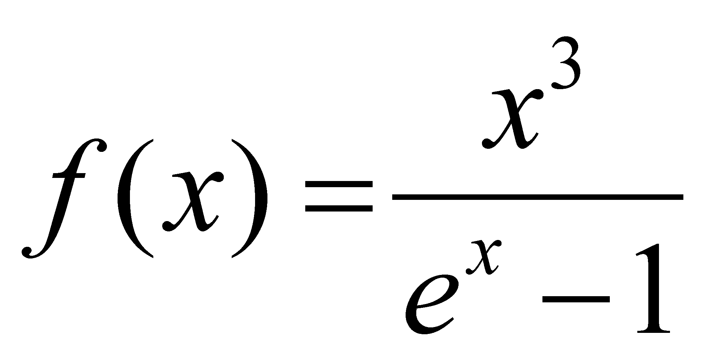

|
|
|
According to the specialized treatises136, the power released on the area unit, by a black body137, which have the temperature T, within an elementary interval of wavelengths is:
 (X.24.8.1.1)
(X.24.8.1.1)
whereis given by the following relation:
(X.24.8.1.2)
h is the Plank’s constant, k is the Boltzmann’s constant, and c, the light speed. The relation X.24.8.1.2 is the well-known Plank distribution of the thermal photons released by a black body which have the temperature T, the support of this distribution being the infinite interval of the photonic wave lengths.
The above-mentioned relations, converted for the frequency domain may become:
(X.24.8.1.3)
and the frequency (spectral) density of the released power is:
(X.24.8.1.4)
It is worth reminding that in terms of the abstract object type, the Plank distribution, with its frequency attribute support (or wave length) represents a spectrum. The graphical plotting of this spectrum, in which both the support frequency attribute and the distributed attribute are substituted (represented) by the spatial position attribute, becomes however a 2D form of the spectrum.
We may recognize the term used in the relation X.24.8.1.4 as the energy contained in a photon with the frequency , and the term kT (from the ideal gas equation) also means energy, the thermal energy mentioned into the equation X.24.7.1. For the time being, we know that this energy kT has an invariant value if the temperature of the black body is invariant, and according to this value, the form of Plank distribution is invariant as well. As a result of these explanations, we may notice that the exponent of e from the above mentioned relation is a dimensionless amount (a number, the ratio of two energy types) which is noted with x and which has a variation domain also by . Once with this variable change, the relation X.24.8.1.4 becomes:
(X.24.8.1.5)
where  is an unique relation for all the Plank distributions. According to this paper, the relation X.24.8.1.5 is named normalized Plank distribution. The function f(x) which is integrated on its support domain has a finite value, equal to . This means that the total power which is radiated on the area unit by a black body at the temperature T is:
(X.24.8.1.6)
power which means the intensity of the radiated thermal energy flux, that is an energy contained in the thermal photons released by that particular body. The relation X.24.8.1.6 written as:
(X.24.8.1.7)
where e is a coefficient called emissivity138 of the body surface (that is equal to one as regards the black body), and a constant named the Stefan’s constant, becomes Stefan-Boltzmann relation. In this relation, the reader may note that, in terms specific to the objectual philosophy, this emissivity coefficient e is nothing else but the RBS permeability of the radiating body to the inner influx of thermal photons.
But, let us return to the function f(x) whose illustration is given in the figure X.24.8.1.1, where we may also find the graphical plotting of the derivative f‘(x), for making much visible the position of the peak value of this function.
As it may be observed from the figure, the crossing through zero of the derivative (which is related to the peak value f(x)) occurs for a value xR which is the solution of the equation resulted from the null of the derivative f’(x) :
(X.24.8.1.8)
By means of numerical methods, as regards the non-trivial solution (the trivial one is x=0) we have a value . Therefore, the normalized Plank distribution has a peak value which corresponds to this unique value for any distribution of this kind. As we have seen in the chapters focused on distributions and objects, this distribution is also an abstract object which must be differentiated from other abstract objects from the same class, which has an internal reference, reference which represents the object within its external relations. Since the position of the maximum value specific to all the normalized Plank distributions is always the same, according to the value:
, (X.24.8.1.8)
Fig. X.24.8.1.1
resulting that the only attribute type which makes the difference between two Plank distribution is the value of this maximum (density’s amplitude) which corresponds to the support value xR (according to the specific terms of this paper, it is the value of the attribute distributed on the singular value xR). However, we saw that a value which is invariant for a class of objects, against which the objects attributes may be determined, represents itself a reference. Therefore, xR is an internal reference, also because its value is not imposed by an IPS, but it is auto-settled as a result of the interactions between the elements of the atomic medium and the ones of the medium of the interstitial thermal photons, which means that xR is a natural reference.
136 P. W. Atkins – Tratat de chimie fizicã, Editura Tehnicã, 1996, B. H. Bransden, C.J. Joachain – Fizica atomului ºi a moleculei, Editura Tehnicã, 1998
137 By using the specific terms of this paper, the notion of black body is translated as a hypothetical material system whose bounding surface shows an unitary permeability to the photon fluxes. However, we have seen that by definition, the material systems own a RBS and they always have a sub-unitary permeability in relation to the real fluxes. This means that this black body is an abstract object, that is only a theoretical model.
138 This e must not be mistaken with the basis of the natural logarithms e from f(x).
Copyright © 2006-2011 Aurel Rusu. All rights reserved.